Fun
Things I build outside of work — nothing related to my day job.
Cycle Simulator
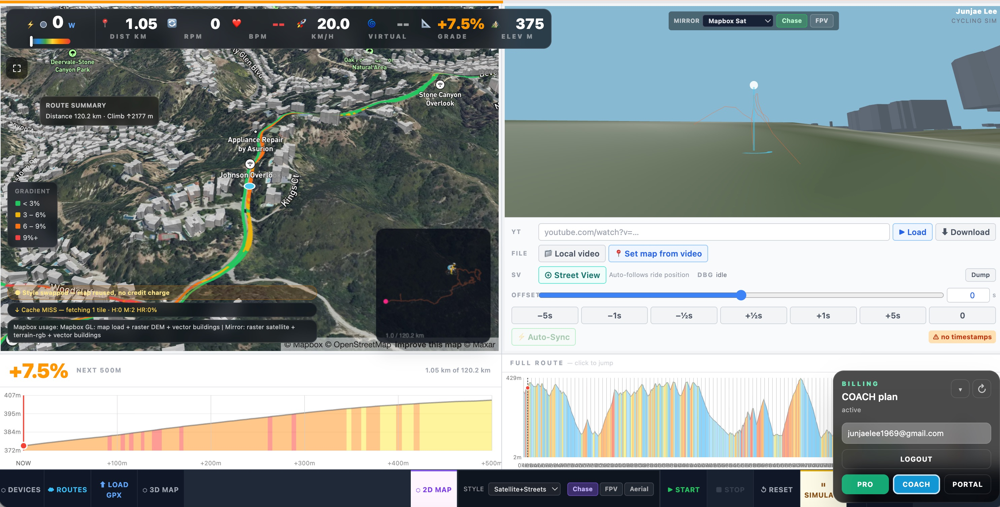
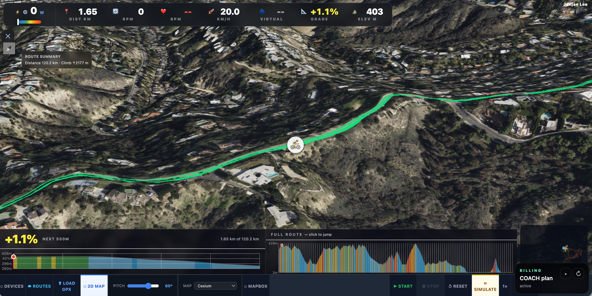
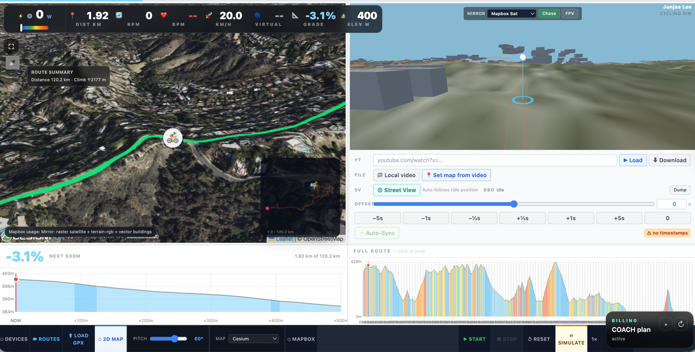
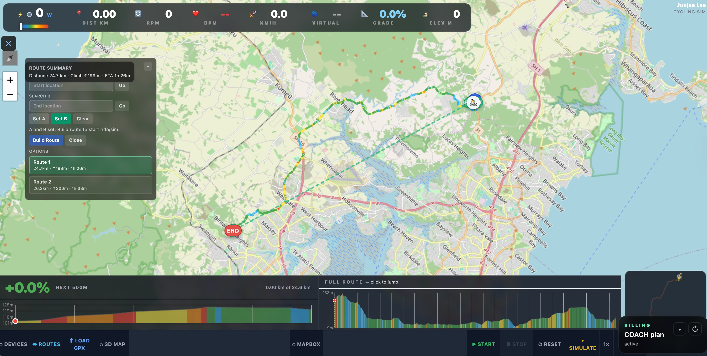
I have been riding bikes for 20 years — starting with cross-country mountain biking on the trails around Edmonton, Canada, then moving to Woodhill Forest in Auckland, and eventually settling into road cycling. Mostly commuting, but with the occasional longer adventure: I have ridden Seoul to Busan (500+ km) twice.
Winter and rainy seasons are the catch. I tried a few indoor cycling platforms but none of them let me ride the routes I actually wanted. So I built my own.
What you need
- A Wahoo KICKR or any FTMS-compatible indoor trainer
- Chrome or Edge browser (required for Web Bluetooth)
- A GPX route file — download one or plan your own
- Optional: a Bluetooth heart rate monitor (Wahoo TICKR or similar)
What it does
- Real-time grade simulation sent to a bike trainer via Bluetooth
- Heart rate monitoring via Bluetooth
- Live dashboard — power, cadence, speed, heart rate, grade, elevation, and distance
- 2D map (Leaflet / OpenStreetMap), 3D map (CesiumJS), and Mapbox GL JS 3D map
- GPX route upload with elevation profile and lookahead chart
- Switch between riding and simulation mode
- Ride virtually anywhere in the world
Architecture
The system is split into five areas: infrastructure (Railway + PostgreSQL), auth and billing (Supabase, Resend, Stripe), maps and media providers (Mapbox, Cesium, Google Maps, YouTube), browser-side hardware integration, and app product subsystems.
A deliberate constraint: the entire hosted stack runs for under $5 a month. That shaped every infrastructure choice — Railway for hosting and PostgreSQL, Supabase for auth (free tier), and Stripe in sandbox mode until there's a reason to go live.
How it fits together
- The browser loads the app from Railway.
- The user authenticates with Supabase Auth.
- Supabase sends auth emails through Resend when needed.
- The backend verifies Supabase JWTs and maps them to app users in Railway PostgreSQL.
- Billing actions go through Stripe — webhooks call back into the Railway app to update plan and entitlement state.
- Route data is stored in Railway PostgreSQL, account-backed per user.
- Map and media features use Mapbox, Cesium Ion, Google Maps, and optional YouTube or local video.
- Trainer and HR hardware connect directly from the rider's browser via Web Bluetooth.
Why the browser owns the Bluetooth connection
The app runs in the cloud, but the trainer and heart rate monitor are physically next to the rider. A cloud server cannot reach those devices directly — so the browser owns the Bluetooth connection and sends control commands to the trainer locally, while staying in sync with the hosted app. This is what makes remote hosting actually work for a real rider setup.
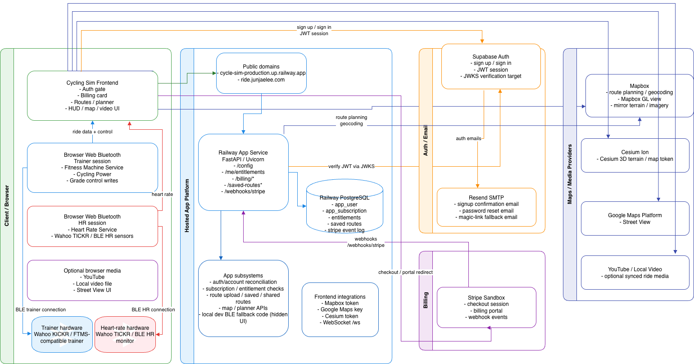
Sailing Trainer
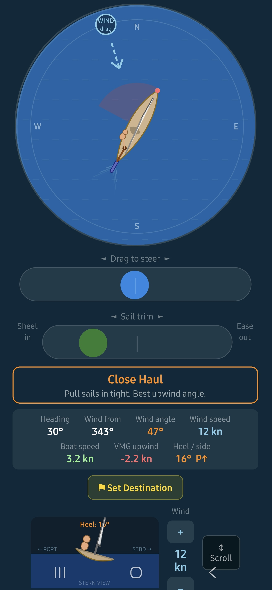
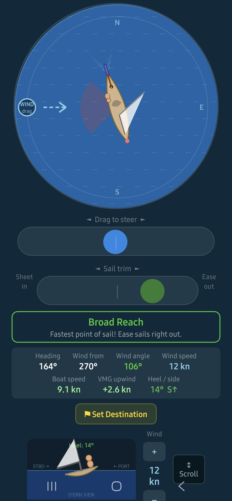
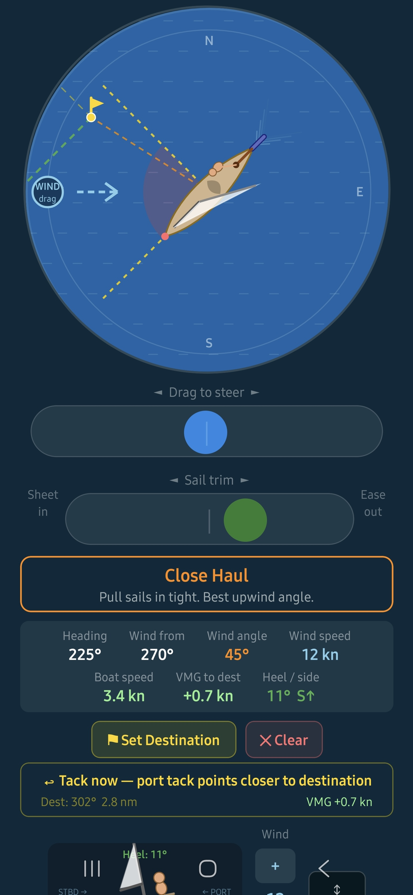
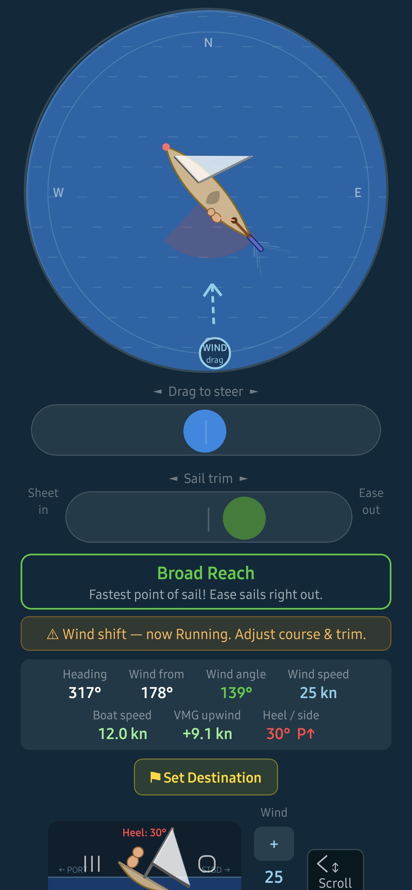
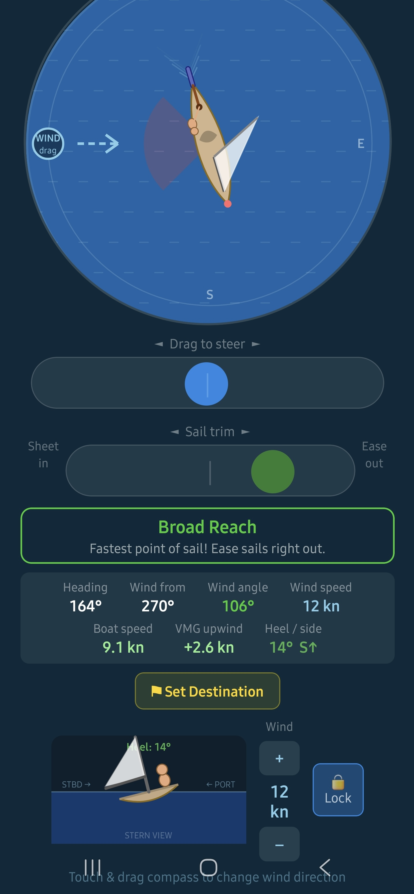
I was first introduced to sailing many years ago by a friend, and something about it immediately stuck with me. Years later, a conversation with a colleague nudged me to finally give it a proper try — I completed Level 1, took a break, then came back for Level 2. That's when things started to get challenging.
Understanding wind direction, sail position, and the tiller all at the same time was surprisingly confusing. My colleague and I even built a small toy yacht to try to visualise how it all worked.
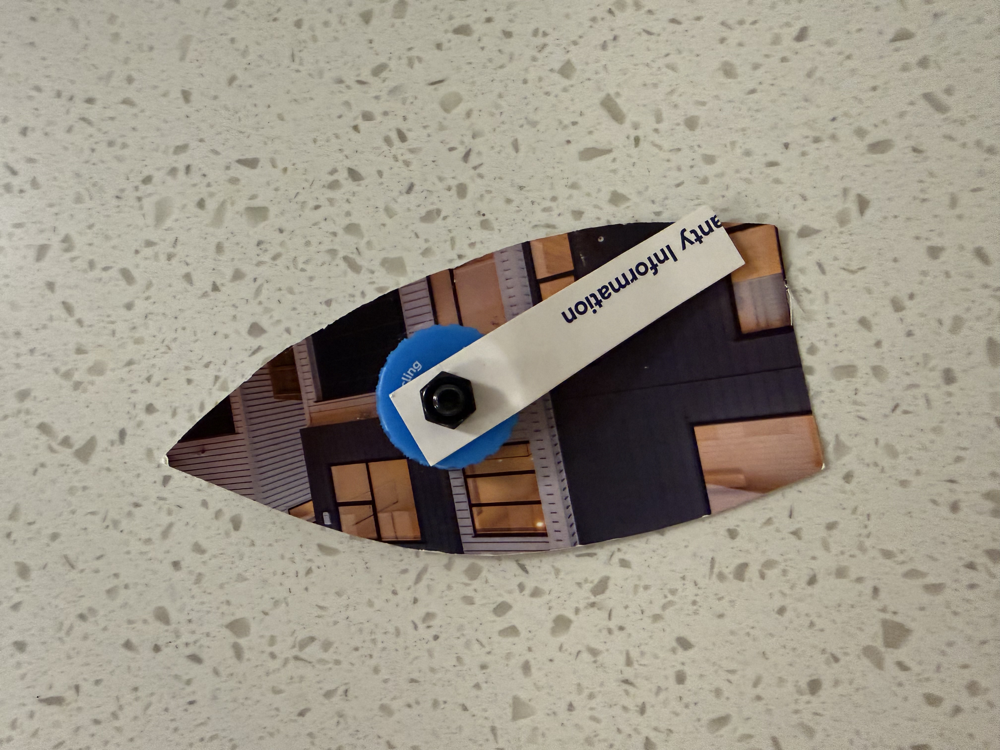
The toy yacht we built trying to get our heads around it.
It helped a little — but not enough. So I built an app instead. What started as a personal learning tool turned into something I hope helps other beginners too.
What you need
- An Android or iOS phone
- The Expo Go app to run it (no install from a store required)
- No internet needed once loaded — runs entirely on device
What you'll learn
- Points of sail — close-haul, beam reach, broad reach, running
- Sail trim — sheet in or ease out for maximum speed
- Tacking upwind — zigzagging to reach a destination into the wind
- Heel angle — how wind speed and sail trim affect stability
- VMG — Velocity Made Good, and why it matters upwind
- Wind shifts — how to recognise and respond to changing conditions
Built with
- React Native + Expo — single codebase for Android and iOS
- TypeScript (strict mode throughout)
- react-native-svg for all physics rendering
- expo-av for ambient ocean and wind audio
- No backend — the entire app runs on device
The app is currently in closed testing — if you'd like to participate as a tester and share your feedback, I'd love to hear from you. Get in touch.

Download Expo Go, then scan to try it on your phone.
Scrubber
A Chrome extension that redacts personally identifiable information from local files — entirely on your machine. Drop in a text file, PDF, Word document, or image and get a clean redacted copy back. Names are detected using a BERT NER model; organisations, locations, and custom patterns are optional.
A small Python server runs locally in the background. No data leaves your device.